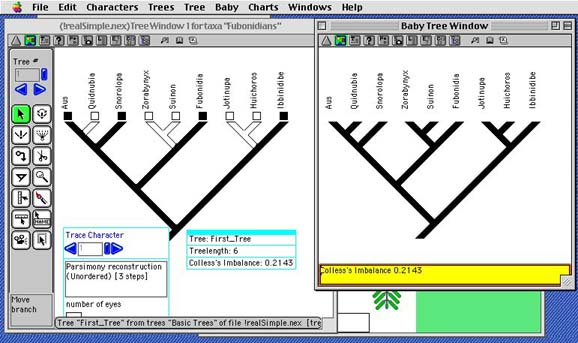

(updated August 2005 except screenshot)
Here is a fairly complex module that presents and controls a window. The module can be hired as an assistant to an existing tree window, and hence appears under a basic tree window's Analysis window. The module presents a window called a Baby Tree Window that gives another view of the tree in the tree window. In this illustration, the example module is displaying the window at right. It shows a tree of the same topology as the tree in the standard tree window at left. If the tree in the tree window at left is modified, the one in the Baby Tree Window is similarly modified. In addition, the Baby Tree Window presents a number calculated for the tree. To learn more about how to write such a module, go to the page showing the source code.
Other example modules can be found in mesquite.examples and downloaded here.
